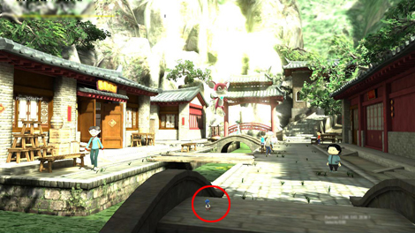
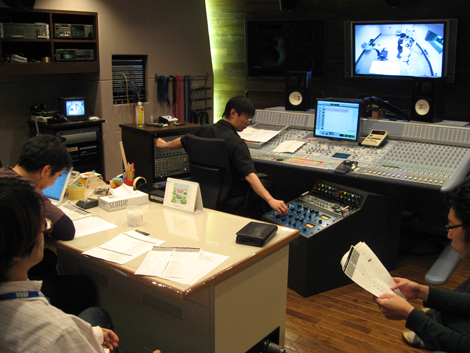

『開発にかかわる裏話をハミだし☆』
2009年03月06日
こんにちは！マツバラです。
当ブログをごらんの皆さま！
こちらの企画へたくさんの応募メールを
どうもありがとうございます！
ヨシノです。
メールの多さもさることながら、
皆さまの熱いメッセージに感謝カンゲキです。
PS3/Xbox360版発売直後の企画だったので
早速プレイして頂いた方から
ご感想のコメントがたくさん！
Wii版とPS3版を両方遊んで頂いた方や
本体と一緒にご購入頂けた方も多く
驚きました！
なんてお金持ち！
だから、その反応はやめなさいってば！
一言で熱く『SWA』への思いを表現してくださった方も、
ソニックとの出会いから『SWA』の感想までを長文にしてくださった方も。
本当に、心より、嬉しいです！
ソニックのイラストや、
手作りソニッククッキーの画像を送って頂いたりもして。
目から汁がハミだしそうです。
ちなみに、皆さまからのメールは
『SWA』開発スタッフに容赦なくハミだしてます。
スタッフ一同、
普段聞くことのできない皆さまの声に
ニヤニヤしながら喜んでました！
皆、
「地獄の開発末期を乗り越えた甲斐があった」と、
しみじみ頷いてました。
ま、また余計なことを……
さて。
ご意見のなかでも多かったのは
「開発の裏話をハミだして」というものでしたが……
裏話……
ウェアホッグが最初、「イビルソニック」って呼ばれてたこととか？
そうだったね！ 懐かしいなあ。
私、今もときどき「イビル」って呼んじゃうもん。
でも、「イビル(Evil)」って欧米では
悪いイメージのほうが強いらしいから
結局「ウェアホッグ」になったんだよね。
「ウェアホッグ(werehog)」っていうのは、造語です。
「オオカミ男(werewolf)」と「ハリネズミ(hedgehog)」を
組み合わせたものです。
他には、何か
ハミだすべき裏話、ないかな？
えーと……
PCのフォルダ漁ってたら、
こんなの出てきたよ。

何これ？
ソニックきゅんは、どこ？
手前の橋の赤い丸の中の
青いまめつぶみたいなのが、ソニック。
ええっ！？ ミニマム！！
どうしちゃったの！？
制作途中、ソニックや町のサイズを調整してるときに
一瞬だけ、こんなことになってました。
面白いから撮影しておいたのだ。
こんなに小さいのに、ちゃんと走ったりジャンプしてるのが面白かった。
開発途中はこんな風に
ゲーム中では見られないことがたくさん起こったね。
…………
ちっちゃいソニックきゅん……
なんて愛らしいっ☆
はいはい。次いこうか。

あっ！ これは、なつかしい！
NPCの声をスタッフの皆で収録したときの写真だ！
『SWA』PS3/Xbox360版では、
ビレッジの住人に話しかけると声が出ますが……
実はこれ、
すべて『SWA』スタッフの声です。
私の声も結構使われてます！
何故か「おばあさんの声がやたら上手」と好評でした！
マツバラ、演技派だったよね……。
ちなみに私は、マズーリの恥ずかしがりやの女の子「ヤヤ」の
驚いたときの声や
謎の旅商人「ウェントス」の声などを出しました。
少し恥ずかしかったけど
楽しかったね～！
では……最後に。
『SWA』サイン入り台本プレゼント企画へのご応募は
本日6日までとなります。
まだまだたくさんのご応募、
お待ちしております！
[声優直筆サインいり『SWA』台本 5名様にプレゼントいたします！]
応募要項
タイトルを「『SWA』台本 プレゼント係」としたメールに(1) 応募者さまのペンネーム
(2) 年齢
(3) コメント
(『SWA』のご感想や
ブログへのご意見、スタッフへのメッセージなど、あれば何でも♪)……をご記入の上
2009年3月6日(金)までに
こちらのメールアドレス(swa_hamidashi@sega.co.jp)までお送り下さい。
尚、当選の方には、別途プレゼント送付先をお伺いするメールをお送りいたします。注意事項
お送りいただいたメールの文面は
予告なく当ブログにて公開させて頂くことがございますので、ご了承下さい。
また、発送の関係上、応募は日本国内在住の方のみに限らせて頂きます。
日時: 2009年03月06日 16:00 | パーマリンク


 ソニックを愛する、元気な『SWA』2年目プランナー。
ソニックを愛する、元気な『SWA』2年目プランナー。 マイペースな『SWA』2年目プランナー。
マイペースな『SWA』2年目プランナー。
 ご意見・ご要望はこちら
ご意見・ご要望はこちら RSS
RSS